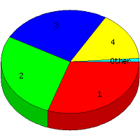

Week of 9/13/2009 to 9/19/2009: Top
5 of
5 File Types (Extensions)
Sorted by Access Count
Individual file types as determined by file extensions. All URLs that
do not contain an extension are counted as directories.

| Rank |
Type |
Accesses |
% |
Bytes |
% |
| 1 |
htm
|
32 |
30.48 |
87,224 |
6.97 |
| 2 |
Directory (folder)
|
29 |
27.62 |
73,500 |
5.88 |
| 3 |
gif
|
27 |
25.71 |
361,130 |
28.88 |
| 4 |
jpg
|
16 |
15.24 |
728,480 |
58.25 |
| 5 |
css
|
1 |
0.95 |
260 |
0.02 |